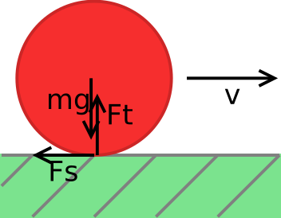
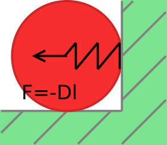

A golyókra a következő erők hatnak:
- Ha a golyó falnak ütközik, akkor a fal eltaszítja magától.
- Ha két golyó egymásnak ütközik, akkor azok is taszítják egymást.
- Ha egy golyó gurul, akkor súrlódási erő hat rá. Ez az az erő, amitől végül a golyók megállnak.
A súrlódási erő
A súrlódás egy gördülési ellenállás. Ennek nagysága attól függ, hogy milyen erősen nyomódik a golyó az asztalhoz. Az pedig attól, hogy mekkora a súlya: Fs = µ·Ft = µ·mg. Az iránya pedig mindig a sebességgel ellentétes. A hozzá tartozó vízszintes (x) és függőleges (y) komponenseket ezért úgy tudjuk meghatározni, ha a sebességvektort normalizáljuk (vagyis elosztjuk a saját hosszával), mivel akkor kapunk egy olyan vektort, amely iránya megegyezik a sebességvektorral, a hosszúsága pedig pontosan egy. Ezt az egységvektort kell komponensenként megszorozni a kapott súrlódási erővel, és persze negatív irányban tekinteni. A zárójelben lévő vx/v és vy/v kifejezések adják az egységvektor komponenseit:
v = sqrt(vx * vx + vy * vy);
fx -= mu * g * m * (vx / v);
fy -= mu * g * m * (vy / v);A golyók ütközése

Amíg két golyó távol van egymástól, addig nem hatnak egymásra. Azonban ha találkoznak, akkor az összeütközéskor erők lépnek fel. Ilyenkor benyomódnak egy kicsit, még ha nagyon kemények is. Az összepréselődés hatására egy rugalmas erő lép fel. Ezt modellezhetjük úgy, hogy a két golyó közé egy nagyon erős rugót képzelünk.
A rugó erejét Hooke törvényéből, az F=-Dl képletből számíthatjuk ki, ahol l a rugó összenyomódása. A két golyó érintkezésekor, amikor a középpontjuk távolsága r1+r2, ez éppen nulla; ha ennél közelebb kerülnek egymáshoz, akkor kezd el nőni. Az erő irányát a két golyó középpontját összekötő egyenes határozza meg. Itt a számítást az előzőhöz hasonlóan végezhetjük: a két középpont távolságát, mint vektort normalizáljuk. Ebből kapunk egy egységvektort, amely éppen a megfelelő irányú. Ezt kell megszorozni az erővel:
/* golyók távolsága * /
dx = x1 - x2;
dy = y1 - y2;
tav = sqrt(dx * dx + dy*dy);
/* rugóerő */
if (tav < 2 * golyo_r) {
l = 2 * golyo_r - tav;
f = golyo_d * l;
fx += dx / tav * f; /* egységvektor*f */
fy += dy / tav * f;
}Golyó és fal ütközése
Ez hasonlóan képzelhető el, mint két golyó ütközése. Minél jobban belenyomódik egy golyó a falba (vagyis minél közelebb van a középpontja a falhoz a sugarához képest), annál nagyobb erő hat rá. Ezt mind a négy falra külön ki kell számítani. A négy fal négy különböző irányú erőt adhat.
Ebben az esetben nincsen szükség arra, hogy normalizáljuk a vektort, hiszen pl. a bal és a jobb oldalni falnál függőleges, y irányú erő nem lép fel. Csak a vízszintes, x irányú erővel kell foglalkozni, amely az x irányú benyomódásból adódik. A bal oldali falat tekintve:
if (x < golyo_r)
fx += golyo_d * (golyo_r - x);